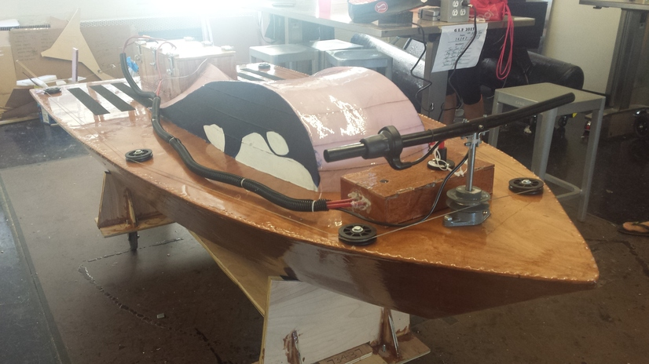
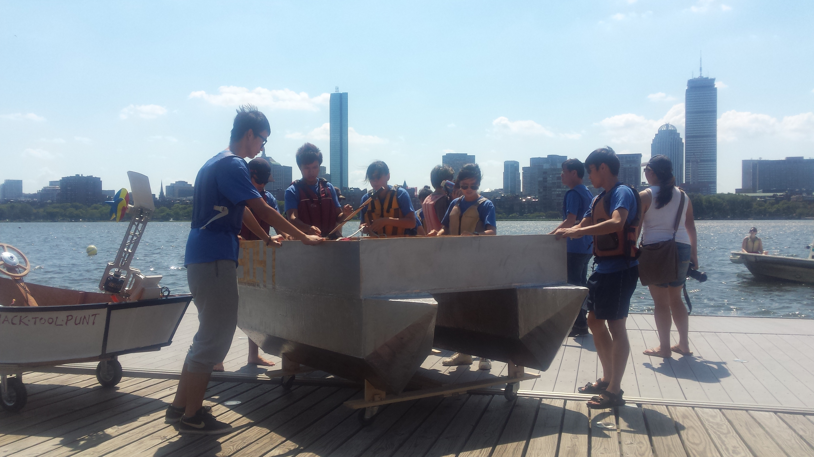
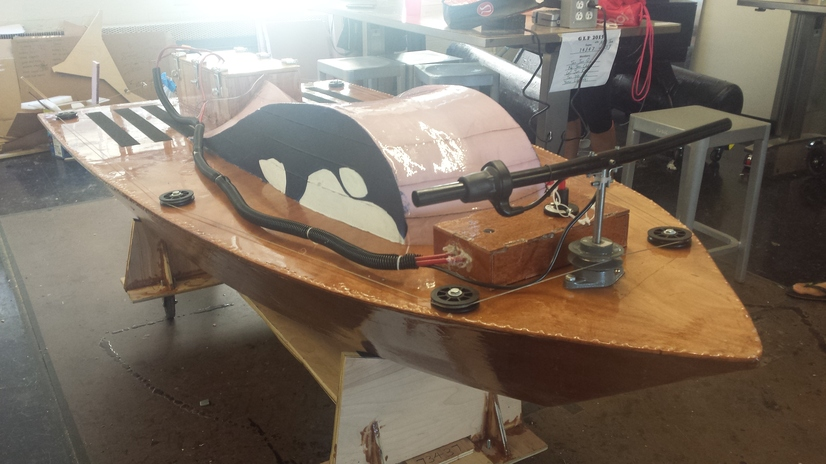
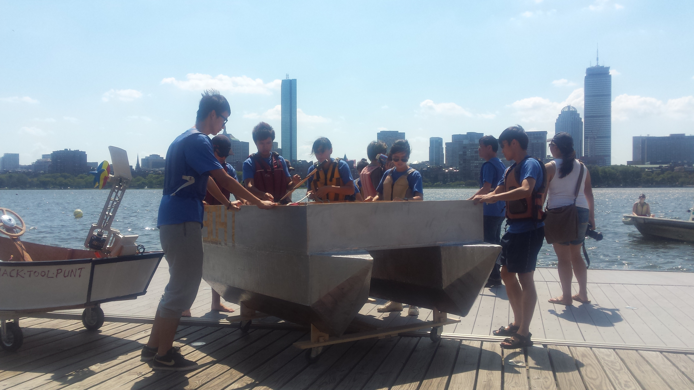
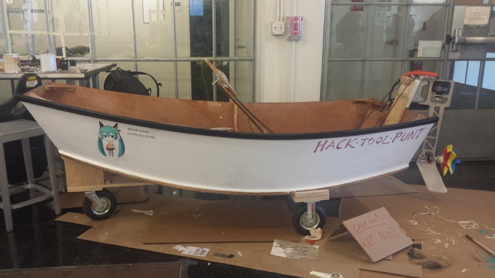
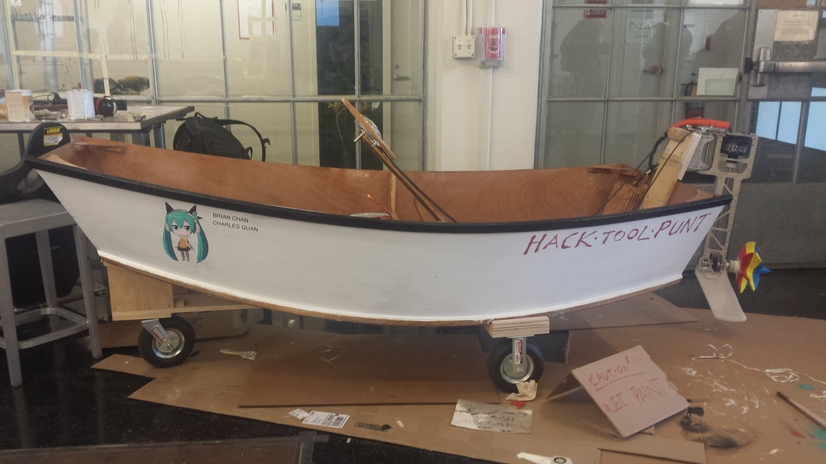
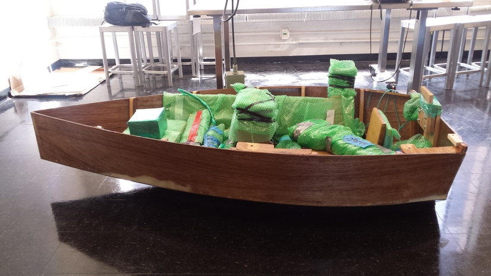

Electric Motor Boat
Summer 2015 - MIT has a collaboration with the Singapore University of Technology and Design, and over the summer, thirty students from SUTD come to MIT for the ten-week Global Leadership Program. As one of the MIT students in the program, I took design classes (pottery, architectural drawing), a wilderness class, and technical writing with the SUTD students. However, the main design project of the summer and the highlight of the program was to build an electric motor boat.
Over the course of around eight weeks, four students from Singapore and I managed to design and build a working electric boat! We designed the hull, propulsion, and electric systems. We had to learn how to order parts and machine them to our designs and solve any problems that arose in the process.
The team blog documenting the first five weeks of progress is here.
I worked mainly with the hull, from cutting the wood to zip-tying the parts together to applying several layers of fiberglass and epoxy. I also helped machine and refine the parts for the propulsion system.
My team chose to build a single-hull boat, but designs varied. One team built a boat with two hulls, one team built a boat large enough to fit all of them (the boats were required to be at least single-passenger), and one team even built their boat by scoring and folding a synthetic plastic board.
 



 

The boat class ended with a race on the Charles River at the MIT Sailing Pavilion. Our boat did very well (the fastest time!) but something went wrong after Ryan reached the finish line, and we had to get help... Turns out we had forgotten to vertically secure a part of the shaft, and it fell out, tearing through part of an aluminum plate in the process. We frantically tried to repair it during lunch, and luckily we were successful, so everyone got a chance to take the boat out for a spin.
The boats were actually shipped (on another boat) back to Singapore. I wonder how it's doing...
I'm really glad I took this opportunity. Asides from a fantastic summer meeting students from Singapore and getting to explore Boston with them, I also learned a lot about design and gained exposure to aspects of mechanical engineering that I would not have otherwise.
